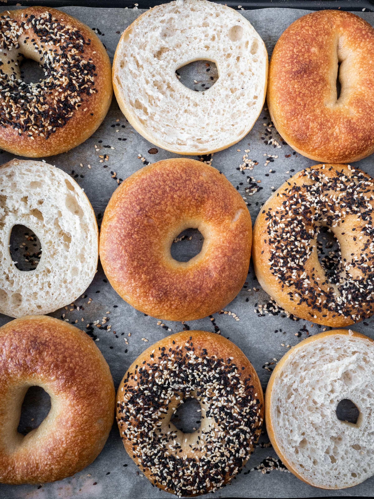
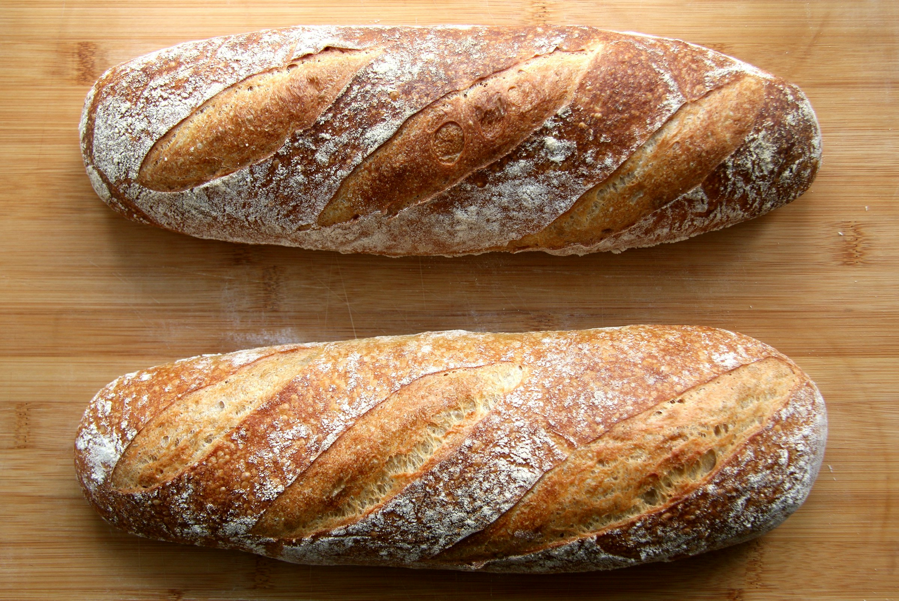
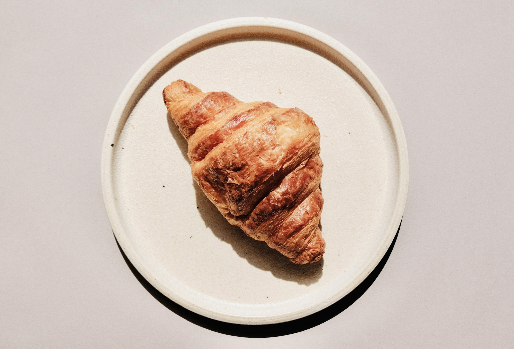
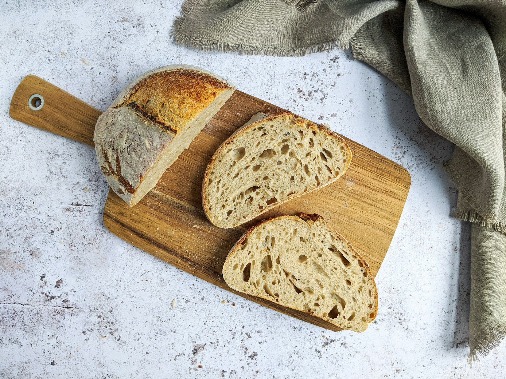
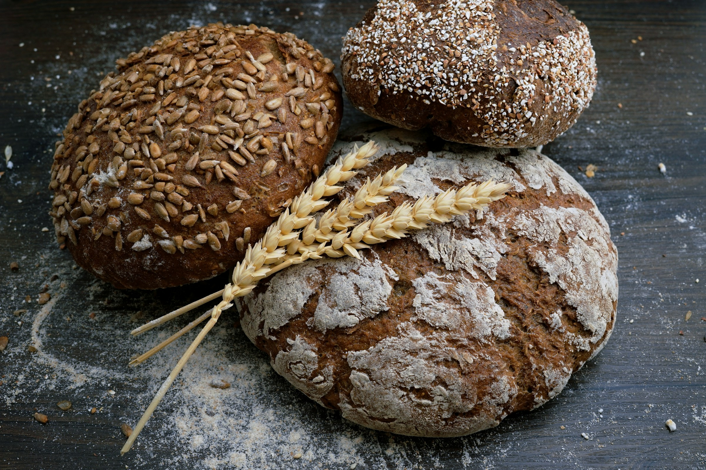

Bagels
Soft, chewy bagels with a slightly sweet flavor and a distinctive hole in the center. A classic breakfast staple with a satisfying texture.
35 kr

Soft, chewy bagels with a slightly sweet flavor and a distinctive hole in the center. A classic breakfast staple with a satisfying texture.
35 kr

A traditional French baguette with a crisp golden crust and a soft, airy interior. Perfect for sandwiches or as a side to soup.
30 kr

A fluffy, golden croissant with a delicate, flaky texture and a buttery aroma. Perfect for a morning treat or as a side to your favorite coffee.
25 kr

A rustic loaf of bread with a thick, crusty exterior and a soft, airy interior, sliced to show its texture.
35 kr

A sourdough loaf with a thick, crusty exterior and a soft, airy interior, sliced to show its texture.
35 kr